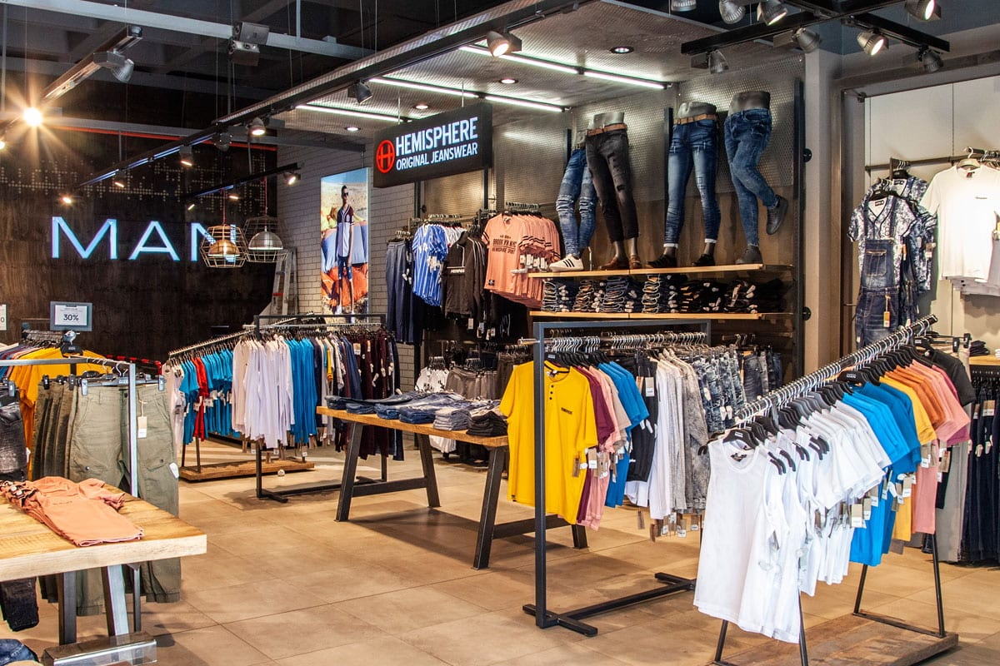

TRUWORTHS
Welcome to Truworths, one of South Africa's leading fashion retailers, with over 728 stores in South Africa and 49 in the rest of Africa.
Truworths forms part of Truworths International, an investment holding company listed on the JSE, whose companies are engaged in the retailing of fashion apparel and accessories. The Truworths International Retail Group incorporates Identity, YDE and Uzzi.
The Truworths business model is driven by a philosophy that has been developed and refined over many years in pursuit of a unique approach to achieve sustainable growth in the complex and fast-moving retail fashion environment.
A major asset in this pursuit has been the strength of the Truworths brand, which represents an innovative, South African interpretation of fashion trends and attractive styling, competitive with the highest international standards, to youthful, fashionable consumers.